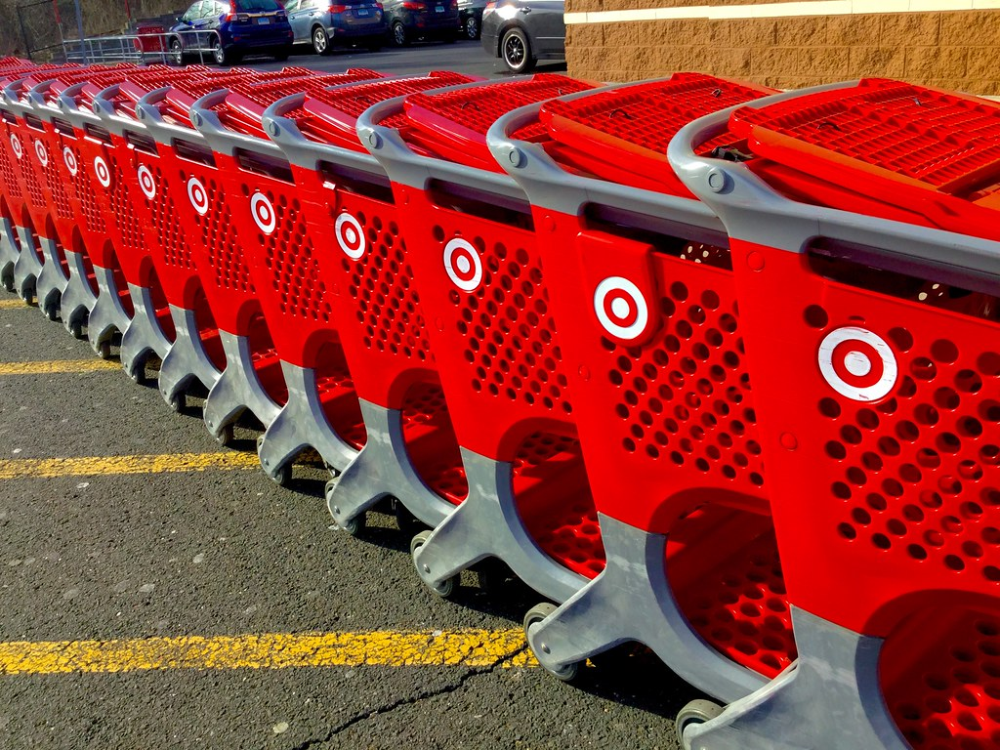

Mamoon Salam
651-460-0430 | mamoonsalam32@gmail.com | Saint Paul, MN
Education
Summit Academy OIC, Minneapolis, MN | March 2023-Present | Application Development
Link to Summit Academy's Information Technology Courses
Job Experience
Target | Front of Store Attendant | June 2018-Present
- Pushed in around 200 carts per hour for guests to use in the store.
- Assisted guests with carrying heavy items to their vehicles.
- Cleaned up spontaneous messes around the store.
- Coordinated non-guest Front of Store operations.
- Assisted with various guest service operations such as cashiering and service desk.
- Worked full time and often volunteered to work overtime.
- Won Team Member of the Month in September 2022.

Skills
- Proficient with Java.
- Steadfast and willing to work overtime.
- Perfect Attendance.